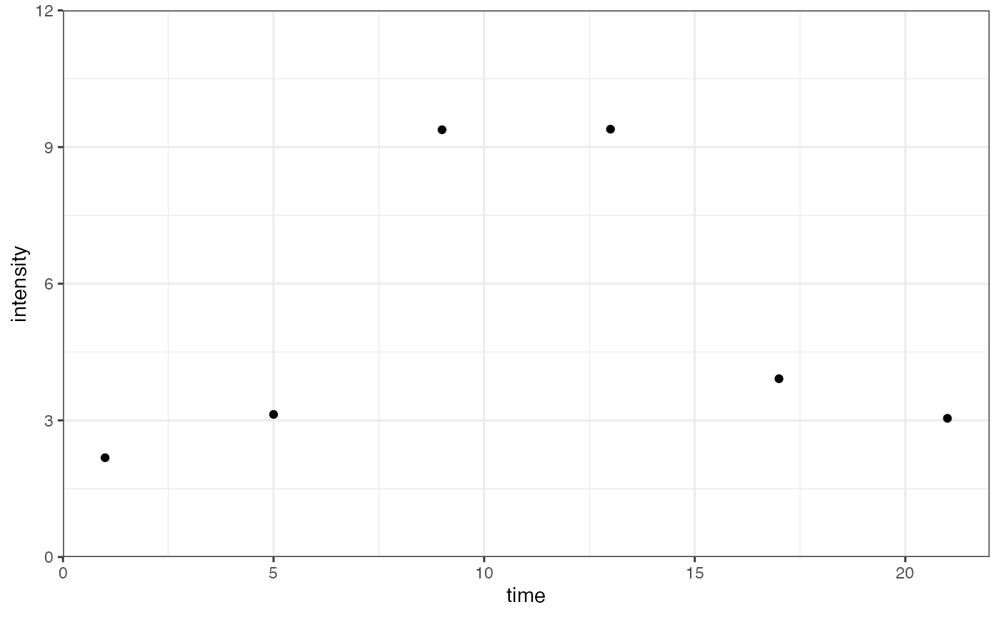
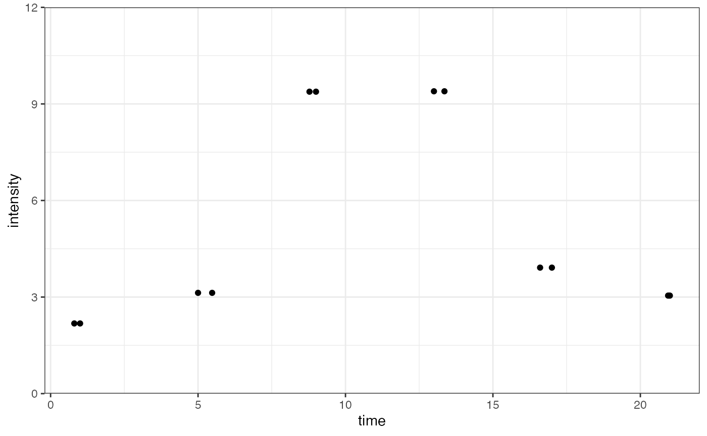
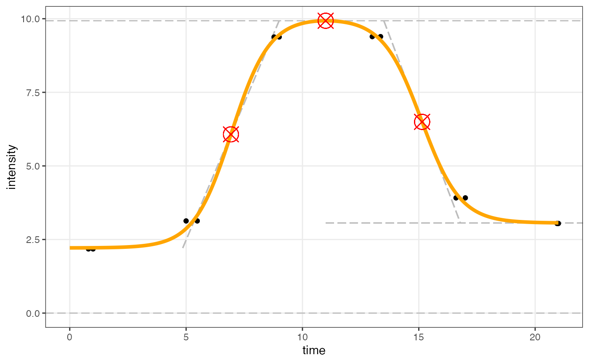
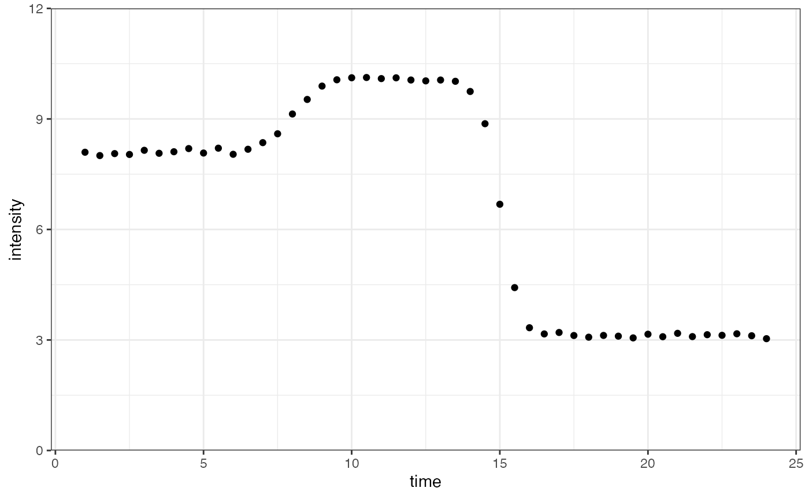
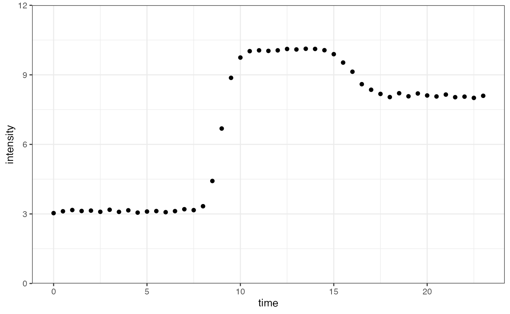
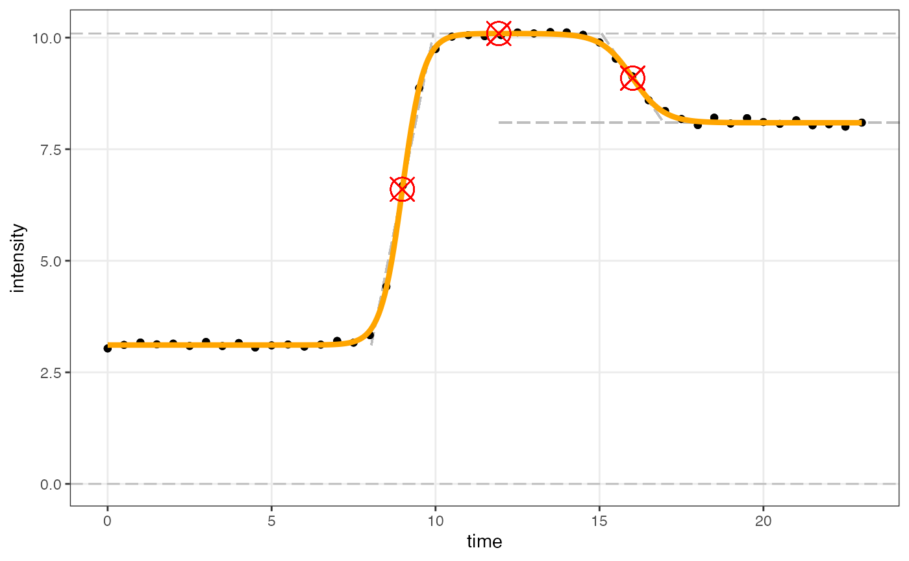

Adjusting data to use with Sicegar
Thomas Matheis, Phineus Choi, Sam Butler, Mira Terdiman, Jo Hardin
2025-10-03
Source:vignettes/adjusting_data.Rmd
adjusting_data.RmdAdjusting the data structure
There are sometimes cases where data must be adjusted before using sicegar. Two common situations in which adjustments are needed is when the data have too few time points, and when there appears to be a decreasing, or negative, trend. While sicegar does not have built-in functions to perform the necessary corrections, the required operations are fairly straightforward.
Too few time points / observations
We will first demonstrate how to adjust data with too few time points. More specifically, if the sigmoidal data has on the order of five or fewer time points (six or fewer for double sigmoidal data), sicegar will usually fail to find a fit. This is a result of the sigmoidal and double sigmoidal models having six and seven parameters respectively.
time <- seq(1, 24, 4)
noise_parameter <- 0.2
intensity_noise <- runif(n = length(time), min = 0, max = 1) * noise_parameter
intensity <- doublesigmoidalFitFormula_h0(time,
finalAsymptoteIntensityRatio = 0.3,
maximum = 10,
slope1Param = 1,
midPoint1Param = 7,
slope2Param = 1,
midPointDistanceParam = 8,
h0 = 2)
intensity <- intensity + intensity_noise
dataInput <- data.frame(time, intensity)
ggplot(dataInput, aes(time, intensity)) +
geom_point() +
scale_y_continuous(limits = c(0, 12), expand = expansion(mult = c(0, 0))) +
theme_bw()
If there are multiple reps at each time point, a small jitter in the x-direction (time) can artificially create more time points for the sicegar estimation.
dataInput_jitter <- dataInput |>
mutate(time = jitter(time, amount = 0.5))
dataInput <- rbind(dataInput, dataInput_jitter)
ggplot(dataInput, aes(time, intensity)) +
geom_point() +
scale_y_continuous(limits = c(0, 12), expand = expansion(mult = c(0, 0))) +
theme_bw()
fitAndCategorize is used as usual, finding a fit for the
model. Data are plotted using figureModelCurves():
fitObj_jittered <- fitAndCategorize(dataInput,
threshold_minimum_for_intensity_maximum = 0.3,
threshold_intensity_range = 0.1,
threshold_t0_max_int = 0.05,
use_h0 = TRUE)
figureModelCurves(dataInput = fitObj_jittered$normalizedInput,
doubleSigmoidalFitVector = fitObj_jittered$doubleSigmoidalModel,
showParameterRelatedLines = TRUE,
use_h0 = TRUE)## Warning: `aes_()` was deprecated in ggplot2 3.0.0.
## ℹ Please use tidy evaluation idioms with `aes()`
## ℹ The deprecated feature was likely used in the sicegar package.
## Please report the issue at <https://hardin47.github.io/sicegar/issues>.
## This warning is displayed once every 8 hours.
## Call `lifecycle::last_lifecycle_warnings()` to see where this warning was
## generated.## Warning: Using `size` aesthetic for lines was deprecated in ggplot2 3.4.0.
## ℹ Please use `linewidth` instead.
## ℹ The deprecated feature was likely used in the sicegar package.
## Please report the issue at <https://hardin47.github.io/sicegar/issues>.
## This warning is displayed once every 8 hours.
## Call `lifecycle::last_lifecycle_warnings()` to see where this warning was
## generated.
Decreasing trend
Next, we will show the process for correcting sigmoidal and double
sigmoidal data that appear to have a decreasing/negative trend. The
solution is to reverse the time points (subtract time from
max(time)) and fit the model in the flipped space. Then
flip the model back (e.g., the
parameter can be estimated in the flipped space and then unflipped to
get the original onseet time).
time <- seq(1, 24, 0.5)
noise_parameter <- 0.2
intensity_noise <- runif(n = length(time), min = 0, max = 1) * noise_parameter
intensity <- doublesigmoidalFitFormula_h0(time,
finalAsymptoteIntensityRatio = 0.3,
maximum = 10,
slope1Param = 2,
midPoint1Param = 8,
slope2Param = 3,
midPointDistanceParam = 7,
h0 = 8)
intensity <- intensity + intensity_noise
dataInput <- data.frame(time, intensity)
ggplot(dataInput, aes(time, intensity)) +
geom_point() +
scale_y_continuous(limits = c(0, 12), expand = expansion(mult = c(0, 0))) +
theme_bw()
The most straightforward method to deal with decreasing trends is to
reverse the x-axis, resulting in the last time value to becoming the
first time value, etc. The new time is calculated as
max(time) - time.
dataInput <- dataInput |>
mutate(time = max(time) - time)
ggplot(dataInput, aes(time, intensity)) +
geom_point() +
scale_y_continuous(limits = c(0, 12), expand = expansion(mult = c(0, 0))) +
theme_bw()
Now that the data have an increasing trend, we can apply
fitAndCategorize as usual to find a fit for our model and
plot using figureModelCurves():
fitObj_flipped <- fitAndCategorize(dataInput,
threshold_minimum_for_intensity_maximum = 0.3,
threshold_intensity_range = 0.1,
threshold_t0_max_int = 0.05,
use_h0 = TRUE)
figureModelCurves(dataInput = fitObj_flipped$normalizedInput,
doubleSigmoidalFitVector = fitObj_flipped$doubleSigmoidalModel,
showParameterRelatedLines = TRUE,
use_h0 = TRUE)